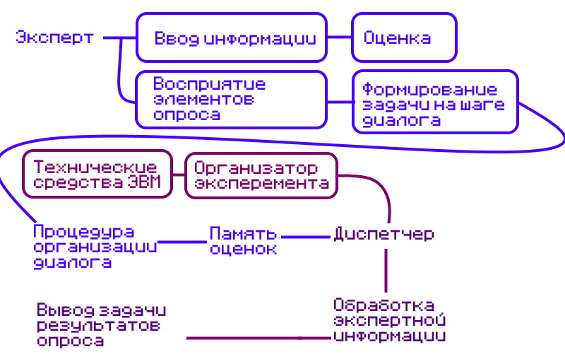

Цель работы: изучить метод экспертной оценки информации, изучить методы выбора рационального варианта системы защиты на основе экспертной информации.
Теоретическая часть
Анализ методов решения задачи выбора рационального варианта СЗИ - совокупность документированных правил, процедур, практических приемов или руководящих принципов в области безопасности информации, которыми руководствуется организация в своей деятельности.
Принципиальными особенностями решения задачи выбора-
рационального варианта СЗИ, определяющими метод ее решения являются:
- многокритериальность задачи выбора;
- не только количественное, но и качественное (нечеткое) описание показателей качества СЗИ, задаваемых в виде требований;
- при нечеткой постановке задачи влияние на выбор метода ее решения экспертной информации, определяющей предпочтение того или иного показателя;
- Анализ литературы показывает, что все многочисленные методы
решения многокритериальных задач можно свести к трем группам методов:
- метод главного показателя {основан на переводе всех показателей качества, кроме какого-либо однородного, называемого главным, в разряд ограничений типа равенств и неравенств.}
- метод результирующего показателя {основан на формировании обобщенного показателя путем интуитивных оценок влияния частных показателей качества q1, ..., qm на результирующее качество выполнения системой ее функций.};
- лексикографические методы (методы последовательных уступок).
Наибольшее применение среди результирующих показателей качества получили аддитивный, мультипликативный и минимаксный показатели.
- Аддитивный показатель качества представляет собой сумму взвешенных нормированных частных показателей
- Мультипликативный показатель качества образуется путем перемножения частных показателей с учетом их весовых коэффициентов
- Максиминный показатель - обеспечивает наилучшее (наибольшее) значение наихудшего (наименьшего) из частных показателей качества.
- Лексикографический метод.
Главным недостатком аддитивного показателя является то, что при его применении может происходить взаимная компенсация частных показателей. Это значит, что уменьшение одного из показателей вплоть до нулевого значения может быть компенсировано возрастанием другого показателя. Для ослабления этого недостатка вводятся специальные ограничения на мини- мальные значения частных показателей, на их веса, а также используются другие приемы.
Контрольные вопросы
Что называется методом экспертных оценок? Логическая схема получения экспертной информации с применением диалоговых средств
Опишите выбор варианта СЗИ лексикографическим методом. 1. Упорядочить требования к СЗИ по важности 2. С согласия ЛПР для каждого требования назначается величина допустимой уступки 3. Для первого требования С1 формируется множество "практически равноценных" 4. В зависимости от кол-ва элементов можно считать множество наилучшим, или переходить к рассмотрению практически равноценных для C2. 5. Если все требования последовательно пересмотрены и врезультате получаем — множество содержащее более одной альтернативы, то возможно применить два подхода: a. уменьшить величину допустимой уступки b. представить ЛПР окончательный выбор лучшего варианта.
Дайте характеристику варианта СЗИ при равной важности требований. При выборе данного подхода, предъявляются следующие требования: • к базе (полнота отражения в законодательных, нормативных и методических документах вопросов, определяющих выбор СЗИ в процессах и программах информационной системы); • к структуре (степень квалификации сотрудников, ответственных за разработку СЗИ); • к полноте и обоснованности мероприятий, обеспечивающих разработку СЗИ качественно и в заданные сроки; • к составу и характеристикам технических средств разработки СЗИ, имеющихся в распоряжении разработчика.
Перечислите методы решения многокритериальных задач. • метод главного показателя; • метод результирующего показателя; • лексикографические методы
Нарисуйте логическую схему получения экспертной информации применением диалоговых средств. 